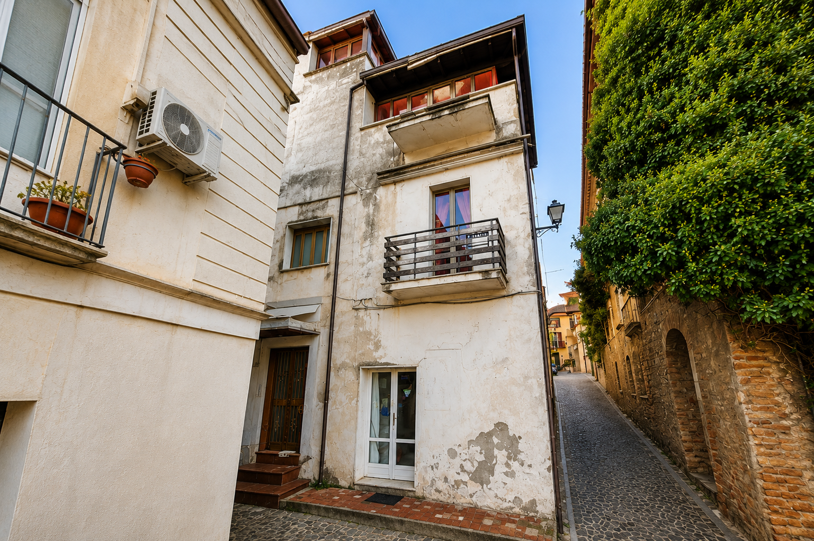

Benvenuti nelle nostre strutture
a San Lucido
Seleziona la zona per scoprire i nostri appartamenti

🏠 Nel Centro Storico
🚉 Nella Marina
← Torna indietro
🏠 Nel Centro Storico
Scegli la tipologia di alloggio
🛏️ Bilocale Piano 1°
🚪 Monolocale
🏡 Bilocale su due piani con veranda
← Torna indietro
📍 Indirizzo e Posizione
📸 Galleria Foto
✨ Nelle Vicinanze